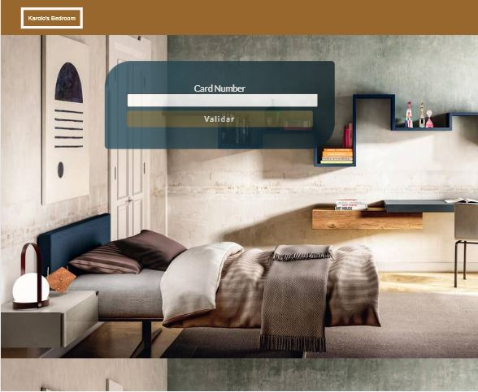
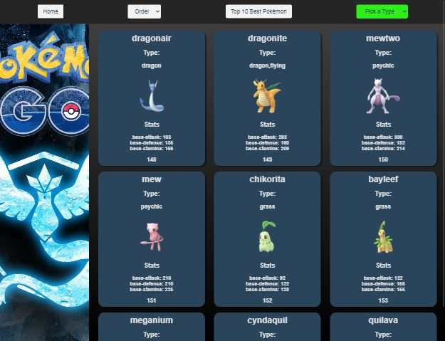
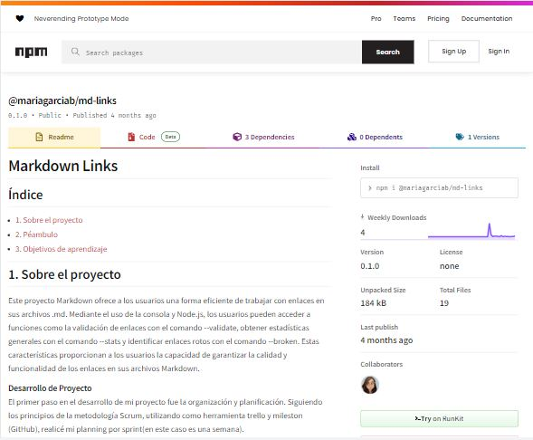
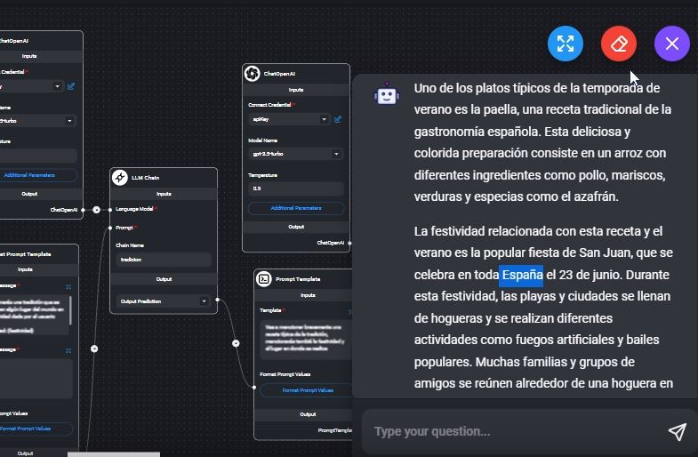

Hola, soy Mari García. Desarrolladora Front-End Jr. especializada en JavaScript, HTML y Css con un background como psicóloga. Mi experiencia
pofesional me ha permitido desarrollar habilidades para encontrar soluciones creativas y adaptativas, que
mejoran y optimizan problemas de la vida cotidiana. Esto me llevó a incorporame al mundo del desarrollo web, me encuentro lista y
emocionda por seguir creciendo en este camino tech.
Dar el 100%, un enfoque abierto y adaptable para seguir aprendiendo en cada proyecto y cada integrante
del equipo. Responsabilidad y profesionalismo, es lo que puedes estar seguro de que puedo aportar.
Gracias por tomarte el tiempo de conocer un poco sobre mí y mi trabajo.
Datos Personales
Email
maria.ds.garb@gmail.com
Dirección
Zapopan, Jalisco, México
PORTAFOLIO
Validación Tarjeta

Validación de tarjetas bancarias con algoritmo de Luhn, enmascaramiento de dígitos y
notificación al usuario de tarjeta válida o inválida.
Data PókemonGo

Página web con información detallada de cada Pokémon, utilizando data preestablecida. Con funciones de filtrado y ordenado
alfabéticamente, además de un top 10 basado en sus estadísticas.
Red Social
Red social “Mamá Genial” pensada para mamás y futuras mamás con registro vía correo o con tu cuenta
Google, respaldada por Firebase. Es un muro de conversaciones y funciones de
comentario, edición y eliminación de mensajes propios.
Enlaces .md

Facilita la gestión de enlaces .md con Node.js, permitiendo validarlos y obtener
estadísticas como enlaces válidos, únicos y rotos para garantizar la calidad en
archivos Markdown.
ToDo List
Lista de tareas interactiva. Incluye funciones para agregar y eliminar tareas, junto con
almacenamiento en LocalStorage para que tu lista se mantenga después de reiniciar
el navegador.
Chatflow con Archivos & de Prompt a JSON (AI)

Proyecto con Flowise y AI para diseñar chatflow, basando un chat con un documento y
prompting a respuestas en formato JSON, utilizando la interacción del
usuario.